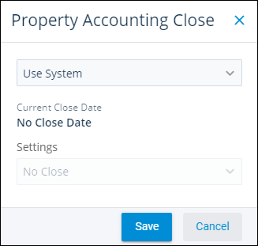

Source: https://rmxhelp.rentmanager.com/Topics/Express/CSH/Property-Accounting-Close.htm
Property Accounting Close (Pop-Up)
Closing your accounting period, also known as closing the books, is an important part of preserving the integrity of your financial data within Rent Manager. When an accounting period is closed, users may no longer add, edit, or delete transactions in that previous period. Setting this per property allows you to have different accounting close periods based on criteria, such as properties with different fiscal years or matching close dates with different management fee posting periods.
Related Privileges
| Group | Privilege | Column |
|---|---|---|
| Properties/Units | Properties | View, Edit |
| Setup | Set Accounting Close Date | Enabled |
For more information, refer to Control User Access.
To view the Property Accounting Close pop-up, go to  arrow_forward Rental Info arrow_forward General arrow_forward Properties and select a property. Then on the action bar to the right, click
arrow_forward Rental Info arrow_forward General arrow_forward Properties and select a property. Then on the action bar to the right, click  arrow_forward Accounting Close.
arrow_forward Accounting Close.

Accounting Close Date Options
The following accounting close date options are available for a property.
| Option | Description |
|---|---|
|
Use System |
The property uses the default accounting close options configured in system preferences. |
|
Single Accounting Close Date |
The property uses a single accounting close date. |
|
Split Accounting close for AR, AP, Journals |
The property uses three accounting close dates for accounts receivable, accounts payable, and journal transactions. |
Accounting Close Date Settings
The following accounting close date settings are available for a property.
| Setting | Description | |||
|---|---|---|---|---|
|
No Close |
There is no default accounting close date for the property. |
|||
|
Specific Date |
The property's accounting period closes on the specified date, such as the last day of the fiscal year. |
|||
|
Monthly |
The property's accounting period closes every month and prevents transactions from being dated prior to the Closing Day. |
|||
|
||||
|
Yearly |
The property's accounting period closes on a yearly basis and prevent transactions from being dated prior to the Closing Month/Day. |
|||
|
||||
|
X Days Ago |
The dynamic close date that is always X days ago from the current date. For example, if you enter a 7 in this field, the close date is always one week prior to today. |
|||
|
Accounting Period |
The End of Period field closes the general ledger at the end of one of your custom accounting periods. The value in the Effective after X days field determines how many days after the end of the period the close date is enforced (locked down). Related Preferences To configure accounting periods in Rent Manager, you must first enable the system preferences option to Enable accounting periods. For more information, refer to General Ledger Settings (System Preferences). |